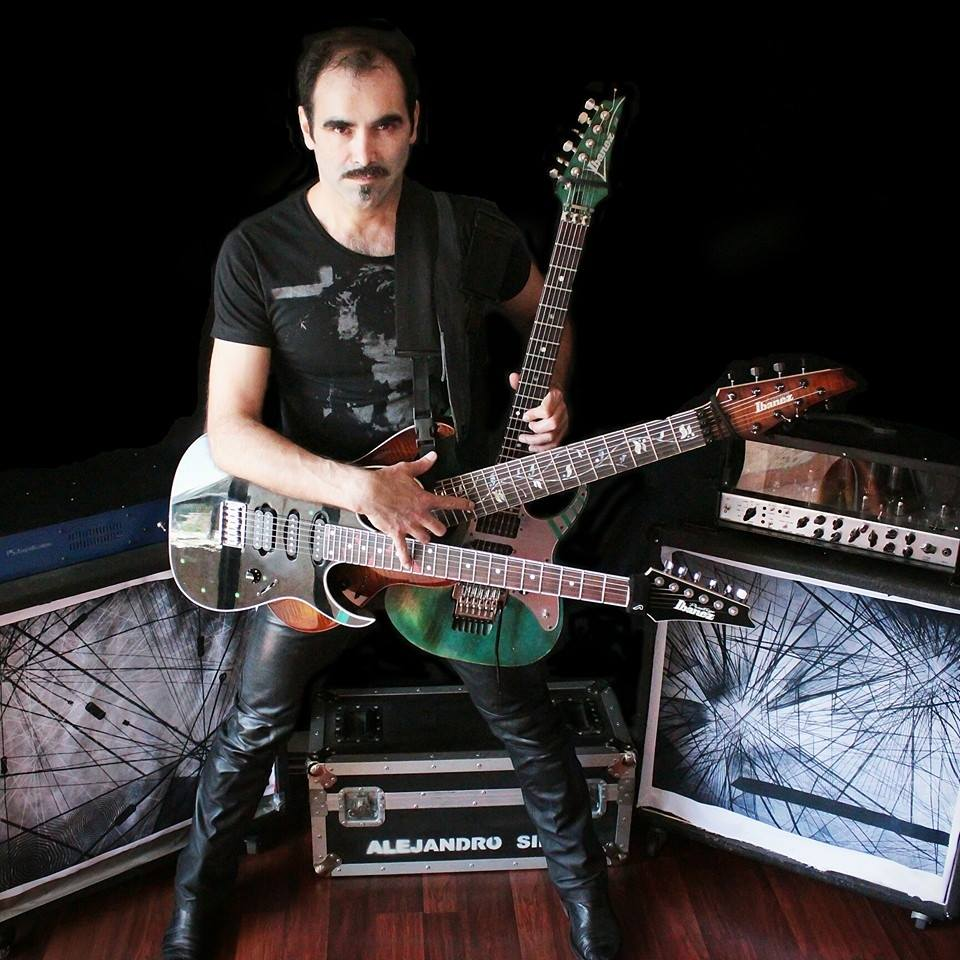
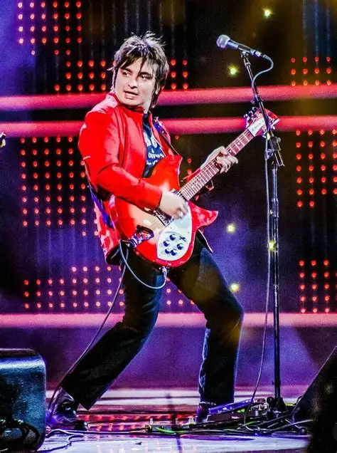
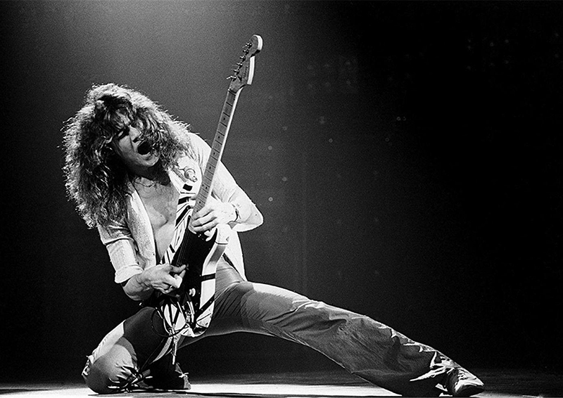

Ángel Parra

Guitarrista de Los Tres y líder del Ángel Parra Trío.
Ver perfilAlejandro Silva

Guitarrista de rock progresivo, participante del G3.
Ver perfilMauricio Durán

Guitarrista de la banda Los Bunkers.
Ver perfilEddie Van Halen

Guitarrista de la Banda Van Halen Considerando uno de los mejores del mundo.
Ver perfilSteve Vai

Steven Siro Vai es un guitarrista, compositor y productor musical estadounidense.
Ver perfilPaul Gilbert
Paul Brandon Gilbert es un guitarrista estadounidense, reconocido por haber integrado las agrupaciones Racer X y Mr. Big
Ver perfilGustavo Cerati

Gustavo Adrián Cerati fue un músico, cantautor y productor discográfico argentino fue líder, vocalista, compositor y guitarrista de la banda de rock Soda Stereo. arrista estadounidense, reconocido por haber integrado las agrupaciones Racer X y Mr. Big
Ver perfil